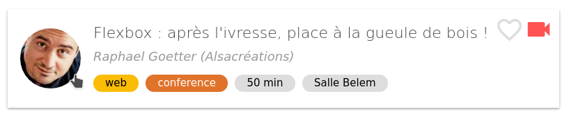

Retour sur
9 & 10 novembre 2016
Flexbox
après l'ivresse, place à la gueule de bois !

2 conférences
Qu'est ce que Flexbox ?
A quoi ça sert ?
Le contexte de la conférence
Exemple
Les balises
Les problèmes
Les règles
Questions pièges
Ce qu'il fallait retenir
Les liens pour approfondir la question